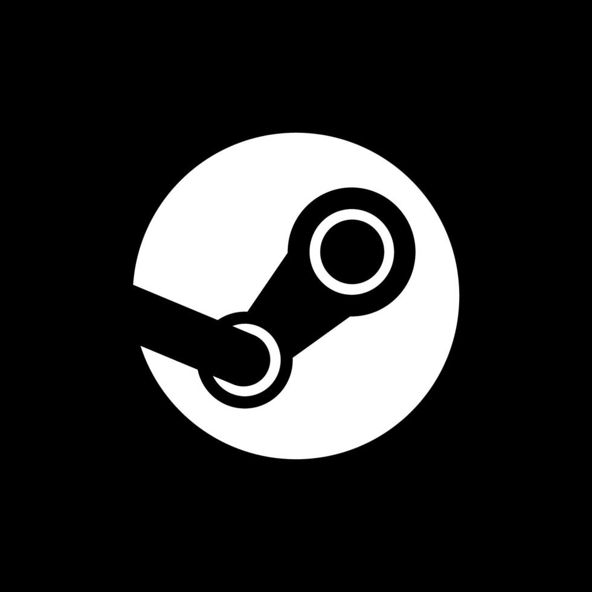

Diary
Назад
Здарова, для дальнейшей навигации тыкни на картинку :3
Меню
Ссылки
Девблог
Кто он такой?
Работы

Я Серёга, мне 16. В прошлом начинал интересоваться разработкой. Сейчас занимаюсь от разработки игр до написания музыки и прочим.
▶️ Воспроизвести